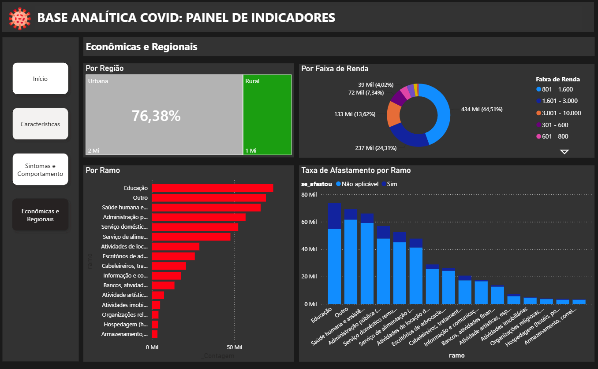

🚀 Data Lake & Analytics na AWS
Pipeline End-to-End aplicado ao IBOVESPA
Uma arquitetura de dados completa construída na AWS, desde a ingestão e armazenamento dos dados até seu processamento, consulta e consumo analítico.
1. Contexto
O desafio de transformar dados brutos em informação analítica
Dados de mercado possuem grande volume, diferentes estruturas e necessidade de atualização e processamento eficiente.
Neste projeto, foi construída uma solução end-to-end na AWS aplicada a dados do IBOVESPA, passando pela ingestão, armazenamento, transformação e disponibilização dos dados para análise.
A arquitetura foi estruturada utilizando uma abordagem em camadas:
Bronze → Silver → Gold
permitindo separar dados brutos, dados tratados e dados preparados para consumo analítico.
2. Dor
Como transformar dados brutos em uma estrutura preparada para análise?
Uma simples ingestão de arquivos não resolve o problema. Era necessário estruturar uma solução que permitisse:
- organizar os dados desde sua entrada no Data Lake;
- processar e transformar grandes volumes de dados;
- possibilitar reprocessamentos sem comprometer as camadas anteriores;
- otimizar consultas e reduzir leituras desnecessárias;
- disponibilizar dados confiáveis para ferramentas de Analytics.
O desafio, portanto, não era apenas "jogar os dados no S3", mas construir uma arquitetura que pudesse sustentar todo o fluxo: BRUTOS → ARMAZENAMENTO → PROCESSAMENTO → TRATADOS → QUERY → ANALYTICS.
3. Solução
Construção de um Data Lake moderno na AWS
Foi desenvolvido um pipeline utilizando serviços gerenciados da AWS, estruturado em camadas e preparado para processamento e consumo analítico.
Arquitetura
- Amazon S3: Responsável pelo armazenamento do Data Lake e organização das diferentes camadas de dados.
- AWS Glue + Spark: Responsável pelo processamento e transformação dos dados, utilizando Spark para execução dos jobs de ETL.
- AWS Glue Data Catalog: Utilizado para catalogação e organização dos dados disponíveis no Data Lake.
- Amazon Athena: Camada de consulta utilizada para disponibilizar os dados processados para análise.
- Power BI: Camada de consumo responsável pela visualização e exploração dos dados.
4. Decisões técnicas
Arquitetura Medallion
BRONZE (brutos) → SILVER (tratados) → GOLD (consumo)
A separação das camadas permite preservar os dados originais, organizar o processamento e facilitar reprocessamentos.
Processamento com Spark
O AWS Glue utiliza Spark para executar as transformações, permitindo trabalhar com uma abordagem distribuída de processamento.
Particionamento
ano / mês
Permite reduzir drasticamente a quantidade de dados lidos durante consultas no Athena, economizando custos e tempo.
Data Catalog & Consumo
O Glue Data Catalog funciona como uma camada de metadados. O Athena atua como motor de consulta entre o Data Lake e o Power BI, sem precisar mover o dataset inteiro.

